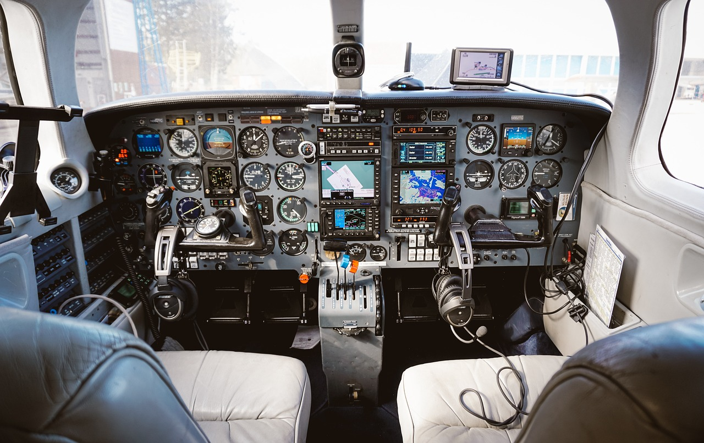
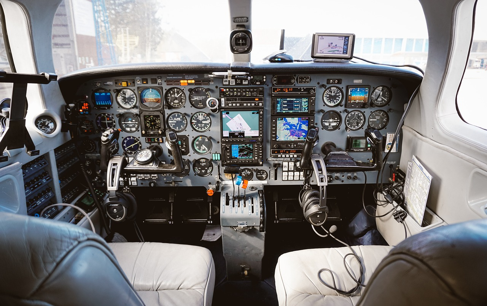

Bonjour,
Je m’appelle Noa JOUVE, j’ai 20 ans et j’ai grandi en région parisienne. En juillet 2022, j’ai obtenu mon baccalauréat avec la mention assez bien, en spécialités mathématiques et sciences de l’ingénieur.
Depuis mon plus jeune âge, j’ai toujours été fasciné par le monde de l’aéronautique. Comment l’Homme parvient-il à faire voler des machines aussi imposantes ? C’est cette question qui m’a poussé, après le bac, à me lancer pleinement dans ce domaine en intégrant un BTS Aéronautique à Clermont-Ferrand.
J’ai suivi cette formation en alternance chez Safran Electronics & Defense, sur le site de Montluçon. Cette expérience m’a permis d’acquérir de solides compétences et a renforcé la passion que je nourris pour ce secteur. J’étais technicien méthode sur le drone Patroller, j’ai appris à utiliser différents logiciel tel que freecad (création d’outillage en 3D), Excel mais aussi SAP. Cela m’a donc permis de développer mes compétences techniques.
En parallèle de mon BTS, j’ai obtenu le BIA (Brevet d’Initiation Aéronautique) avec la mention bien, et je me suis inscrit dans un aéroclub afin de préparer le PPL (Private Pilot Licence).
En juillet 2024, j’ai validé mon BTS Aéronautique, et en septembre de la même année, j’ai intégré la licence professionnelle Maintenance Aéronautique à Blagnac, toujours en alternance, cette fois chez EXPLEO, en tant que technicien d’essais sur la FAL ATR. Cette année j’ai pu donc améliorer beaucoup de compétences en ce qui concerne l’aviation car j’ai travaillé, étudié et testé pas mal de systèmes sur avion.
Sur le plan personnel, je suis passionné de sport. J’ai pratiqué plusieurs disciplines, chacune m’ayant apporté des qualités différentes. Mais ce que j’aime par-dessus tout, c’est partir à l’aventure. C’est pourquoi, le 18 septembre 2025, je ferai mes valises pour aller vivre en Australie. Ce voyage sera pour moi l’opportunité d’améliorer mon anglais, de découvrir de nouvelles cultures, mais aussi d’apprendre à mieux me connaître.
La raison principale de ce départ est de me rapprocher de mon rêve : devenir pilote. Je sais que je n’ai pas encore toutes les compétences nécessaires pour me présenter aux concours, mais je compte sur cette expérience en Australie pour me faire grandir professionnellement et personnellement, et ainsi me donner les moyens de réaliser mon objectif.


 
